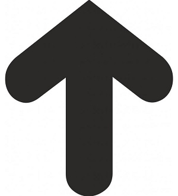

Hančino modelářské okénko
Kdo jsem

Co o sobě říct...
Především jsem gamer - videoher (nejraděj pařím střílečky nebo hraju vláčky) a deskovek (zde dávám přednost tzv. "ameritrash" hrám, kde vítězí příběhovost a akce před sbíráním bodů), no a občas si střihnu nějakej airsoftovej LARP.
Jsem AFOL - v překladu to znamená Dospělák co miluje Lego a potřebuju vážně hodně nutně místnost na všechny stavebnice co vlastním.
No a v neposlední řadě také jsem modelář - a tomu bych se na této stránce ráda věnovala. Chci vám ukázat základ jak na barvení modelů, konkrétně figurek, představím vám nějaké tipy co se mohou hodit a ukážu něco málo z mého portfolia. Nakonec se vám možná bude hodit nějaký ten odkaz na diskuzní fórum či stránku o barvení. Tak vzhůru do toho!

Začínáme

Budete potřebovat především dobré barvy. Já osobně barvím značkou Citadel od Gamesworkshopu, ale skvělé barvy jsou třeba Valejo nebo ArmyPainter. Záleží, kolik do koníčku chcete investovat. Všechny zmiňované značky používají barvy akrylové na bázi vody. U mě vyhrály Citadel, protože se mi líbí jejich barevná škála, kryvost a světlostálost.
Dále to bude chtít štětce - na trhu je spousta značek, není vůbec třeba kupovat ty nejdražší! Na tzv. vrstvení barev (layer) stačí středně kvalitní kulatý akvarelový štětec (pokud malujete s dětmi, stačí obyč z papírnictví), na vytažení světlých míst (dry) budete potřebovat plochý akrylový štětec, ovšem na detaily už se vyplatí zainvestovat a pořídit si dělo.
Poslední věc jsou doplňkové modelářské potřeby, jako jsou štípací kleště, které potřebujete na vyštípání plastových dílků ze sady (určitě si pořiďte detailní, modelářské, klasickýma byste mohli zničit dílky modelu), dále řezák - dobré jsou hobby/modelářské, zase stačí obyč za pár korun, není nutné kupovat značkové a lepidlo na plast (opět dá se do stovky pořídit v hobby obchodě).
Tipy-rady

Pokud se nebojíte míchat barvy, stačí vám do začátku skutečně jen ty základní - určitě si pořiďte bílou a černou. Základní barvy jsou: červená, modrá, žlutá a z nich jste schopni namíchat cokoliv. Vyzkoušejte i metalickou barvu, je to zábava!
Míchání základních barev
| Barva + barva |
Výsledek |
| modrá + červená |
fialová |
| červená + žlutá |
oranžová |
| žlutá + modrá |
zelená |
| červená + zelená |
hnědá |
Nikdy nenechte zaschnout štětec!! Vždy okamžitě když měníte štětec či něco spravujete apod., dejte nepoužívaný štetec do kalíšku s vodou a pořádně vymáchejte!
Do začátku si nepořizujte nic drahého, počkejte s tím, až se to trochu naučíte, barva jde vážně hodně blbě dolů. Na vyzkoušení si můžete pořídit i obyčejné plastové figurky z hračkářství.
Nedávejte zbytečně moc barvy na štětec, přebytečnou barvu klidně setřete na ubrousek, postupně na to přijdete sami. Je lepší dát víc vrstev barvy, než ji zapatlat a budete mít z detailní figurky jednu velkou kouli.
Pořiďte si dobrou lampu (nejlepší je LED s integrovanou lupou) či malujte u okna za denního světla. Nejen že si míň zkazíte oči, ale především uvidíte na detaily.
Zeptejte se

Zde najdete odkazy na prima stránky o modelařině. Doporučuji se podívat na různá videa, na YouTube najdete mraky tutoriálů, které vám velmi pohou v začátcích. Kdyby jste si přeci jen nebyli něčím jistí, hrozně fajn jsou různá diskuzní fóra, např na Facebooku. A kdyby úplně hořelo, přidávám i kontakt na mě ;-)
Přeji hodně trpělivosti a ať vám barvení jde od ruky!
Odkaz na českou barvící skupinku na FB: Barvení figurek / miniatur
Odkaz na celosvětovou skupinu o modelařině na FB (v angličtině): Weathered Models
Odkaz na oficiální stránky britského Gamesworkshopu, kde též můžete najít spoustu inspirace, především co se týče škály barev. Mají též kvěle udělané video-tutoriály, např.:
- Modelářské nástroje
- Jak malovat budovy
- Základ barvení figurek (Layer)
Kontakt

Hanka Picková
Email:Hanka@email.cz
Mobil: +420 123 456 789